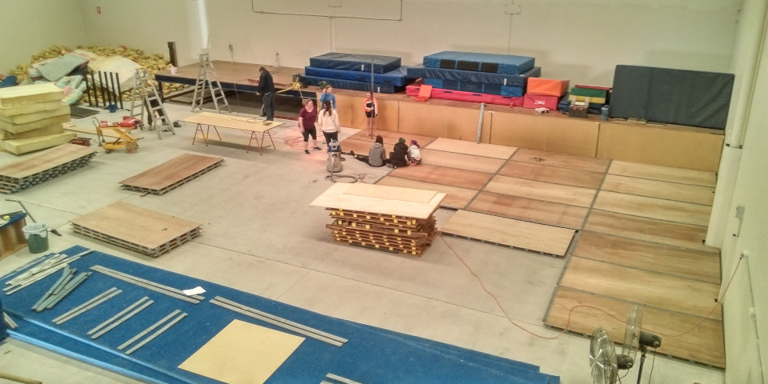
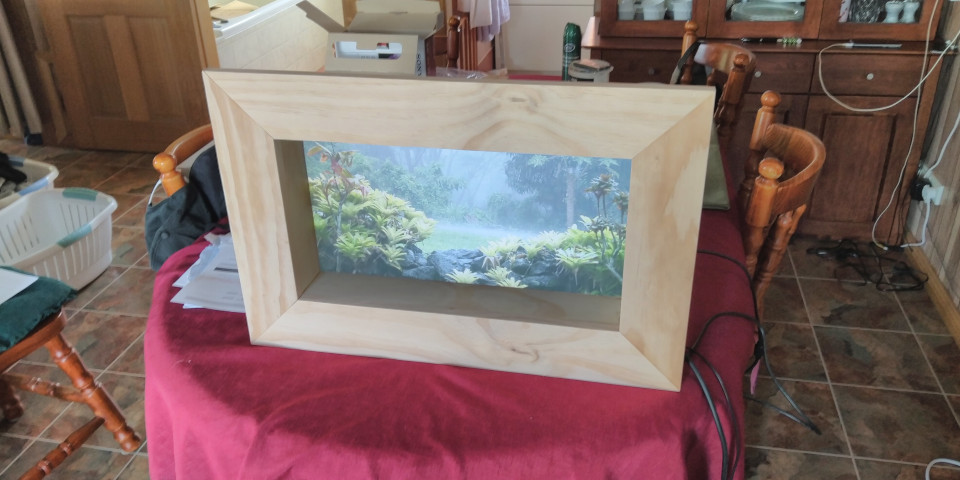
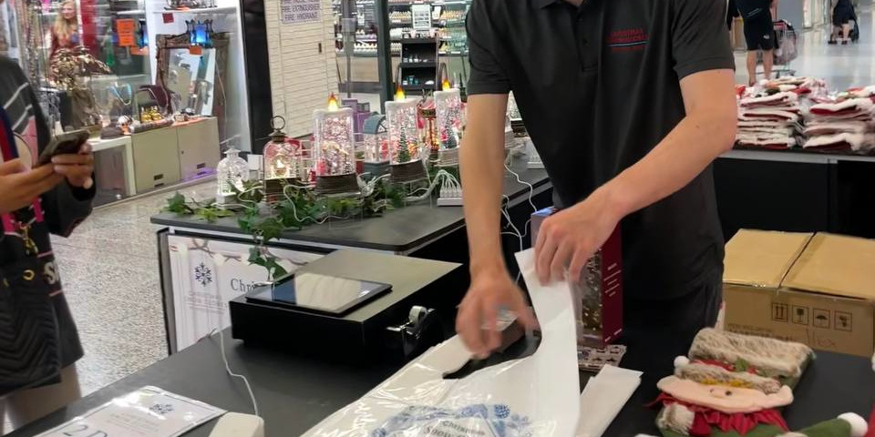

Hey, I'm Bradley Turner, and I am currently a packaging designer at abbe. I'm also the founder of my own startup, Algebuckina Design where I manage the company and lead my small volunteer design team in my free time. I graduated Western Sydney University with an Honours Degree in Industrial Design. This website is a snippet of what I've done and things about me, and feel free to Contact Me >>
-
2+
Years of Design Experience
-
2535+
Packaging Designs
-
445+
Code Commits
Portfolio
Projects

Wood Keyboard

Widevision VR

Bus Shelter

Church Website

SWGEmu Mod Manager

Head Unit
Experience

abbe

Algebuckina Design

Mod The Galaxy

Baulkham Hills Uniting Church

House Worx
Bounce Gymnastics
Skills

CAD
Design and Innovation

Prototyping

Coding
Customer Service

VR
Interests

Sim Racing

Camping

CNC Routing

Cars

3D Printing

Technology
Contact Me
Hey, thanks for having a look at my portfolio, if you have any questions or comments, feel free to send me an email and I'll get back to you as soon as I can!
bradley.turner@algebuckina-design.au